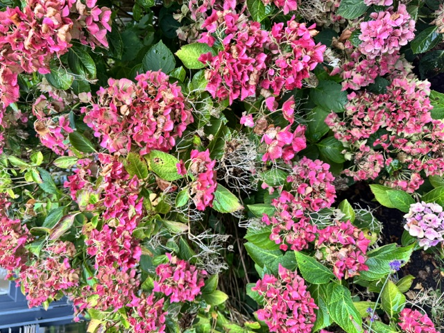

Rispen-Hortensien (Hydrangea paniculata) sind dekorative Ziersträucher, die besonders geschätzt werden. Die großen, pyramidenförmigen Rispen erscheinen meist von Juli bis September und zeigen zunächst weiße oder cremefarbene Blüten, die im Verlauf oft in Rosa- oder Rottöne übergehen. Diese Veränderung verleiht der Pflanze eine besonders attraktive Wirkung und macht sie zu einem beliebten Element in vielen Gärten. Die Art bevorzugt sonnige bis halbschattige Standorte und gedeiht am besten auf durchlässigem Boden. Sie ist relativ anspruchslos und gut winterhart. Rispen-Hortensien werden häufig als Solitärpflanzen, im Beet oder als Kübelpflanze verwendet und sind durch ihre ansprechende Blüte sowie ihre unkomplizierte Pflege eine geschätzte Wahl für Gestaltung und Landschaftsbau.
? Zurück zur Navigation